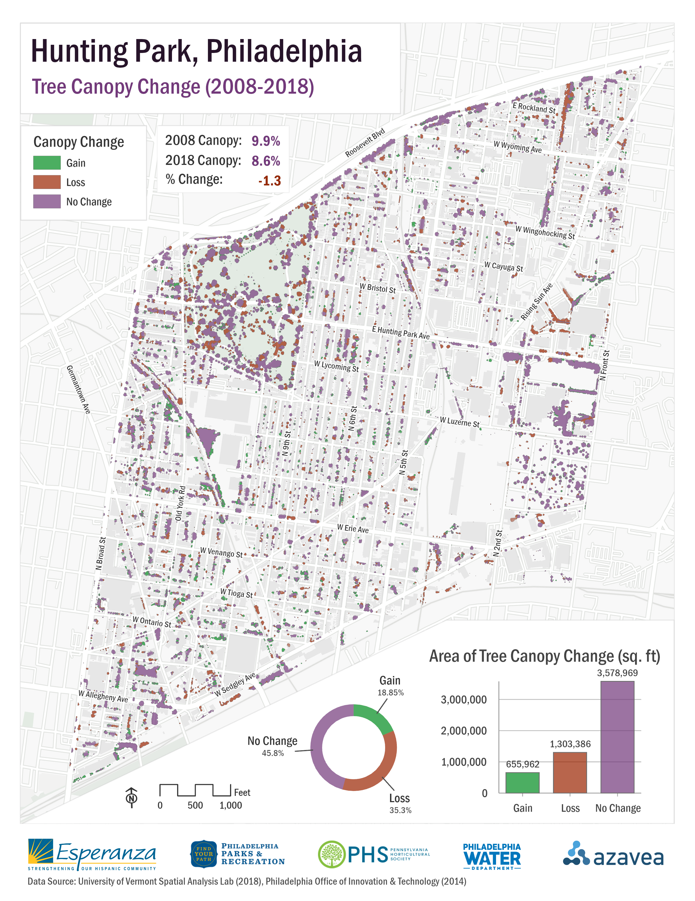
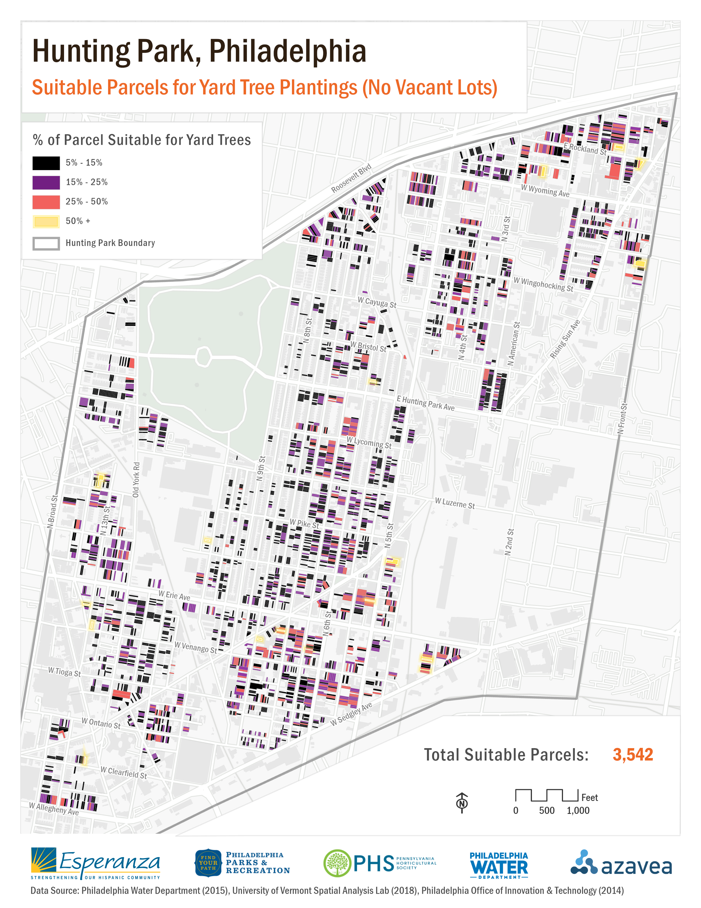
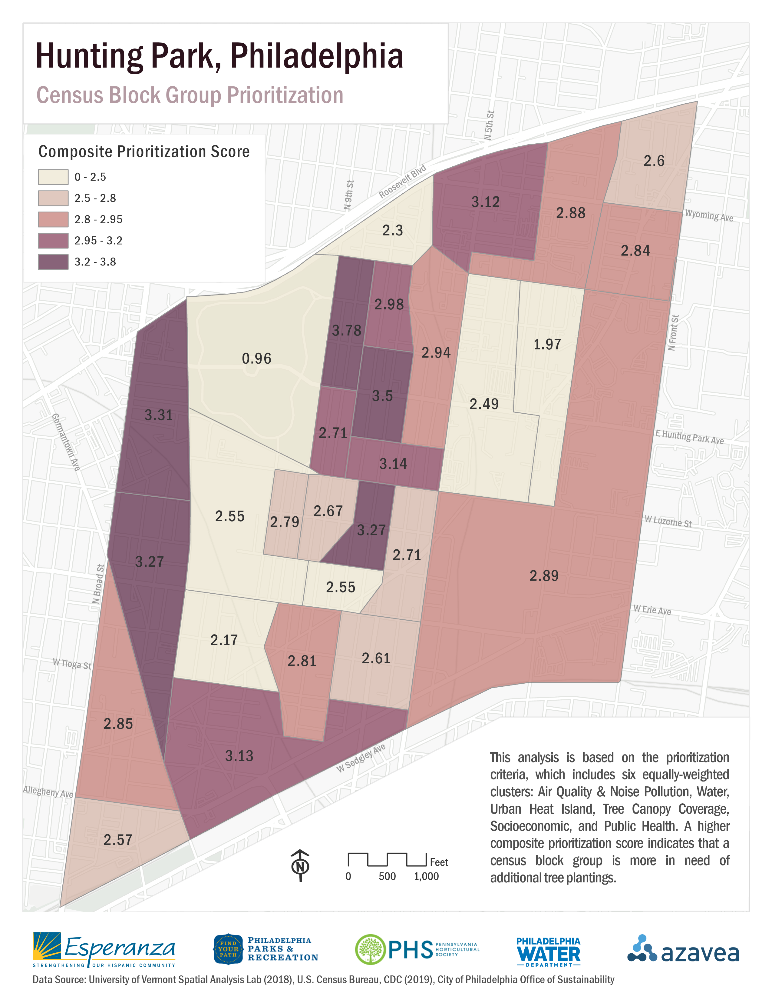
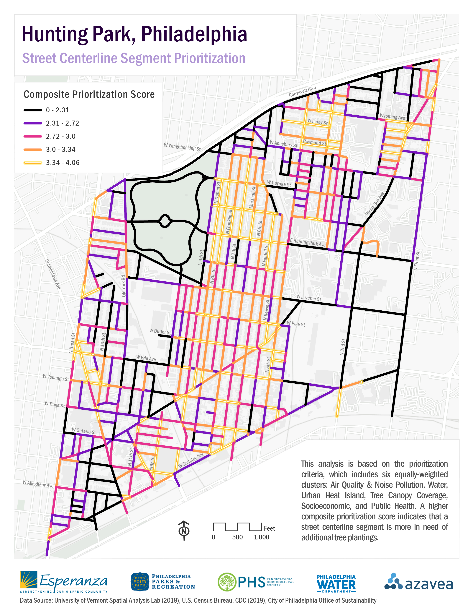

Hunting Park: A Model for Urban Cooling

Esperanza is a non-profit organization devoted to empowering the residents of Hunting Park, Philadelphia through educational programs that cultivate financial, educational, and personal growth. In partnership with numerous local organizations such as Philadelphia Parks & Recreation (PPR), the Pennsylvania Horticultural Society (PHS), and more, Esperanza is strategizing a neighborhood-level forestry plan that aspires to achieve 30% total tree canopy coverage. This plan will serve as the first formal tree planting effort under the Philadelphia Urban Forest Strategic Plan, which is currently in the planning process. The Esperanza - Summer of Maps project seeks to guide the neighborhood-level forestry plan, and the main project components are to:
1. analyze the existing tree canopy
2. identify physically suitable locations for additional trees
3. determine the areas most in need of additional trees within Hunting Park
To better understand Hunting Park’s physical characteristics, I conducted a site suitability analysis which identified land that has the capacity for additional street, yard, and commercial/industrial tree plantings. The results of the site suitability analysis indicate that Hunting Park has the potential to attain at least 36% tree canopy coverage.
To identify the neighborhood’s census block groups and street segments that are most in need of additional tree plantings, I developed a composite prioritization index that is based on criteria established by myself, Esperanza, and the project partners. The project concludes with a recommendation to next combine the findings of the site suitability and prioritization analyses.
Existing Tree Canopy Analysis

To analyze the existing tree canopy of the neighborhood, I used the 2008-2018 canopy change dataset from the University of Vermont Spatial Analysis Lab to identify patterns of canopy change and prevalence at the neighborhood and census block group levels. Above is one of the maps from this part of the project; it depicts the canopy that was lost, gained, or stayed the same between years 2008 and 2018.
ArcGIS Pro and Adobe Illustrator were used to design all maps for this project.
Site Suitability Analysis

The second portion of the project included determine suitable sites within the neighborhood for additional tree plantings. Separate analyses were conducted for residential sites, commercial/industrial sites, and sidewalks. The results of each analysis were determined by criteria set by the project partners, and the datasets used to identify available land include the Philadelphia land cover dataset and the Philadelphia Water Department parcel dataset. The map above is the static version of a web map depicting suitable residential parcels for additional tree plantings in the neighborhood.
Tree Canopy Prioritization Analysis

The third and final portion of the project included the prioritization analysis at the census block group and street centerline segment levels. Prioritization criteria was determined by the project partners and I; it includes six equally-weighted variable clusters (Air Quality & Noise Pollution, Water, Urban Heat Island, Tree Canopy Coverage, Socioeconomic, and Public Health,). A higher composite score (the highest possible is 6) indicates that a census block group is more in need of additional tree plantings.

A street centerline segment prioritization analysis was also conducted to measure characteristics that are offered at a finer scale than census block groups, such as maximum average surface temperature, crime incidents, the amount of impervious surfaces, etc. The goal behind this unit of analysis is to determine which particular streets within the census block groups are most in need of tree plantings, as this may be the most actionable unit of analysis for partnering organizations that plant street trees (such as Esperanza and the Pennsylvania Horticultural Society).
Prioritization scores were calculated in the same way as the census block group prioritization analysis, but variables such as impervious surfaces, tree canopy coverage, and surface temperature were measured by zones around the street segment lines (using the Euclidean Allocation tool in ArcGIS Pro), joined back to the vector street segment lines, and ranked before contributing to the overall prioritization score.
get in touch
Thank you for stopping by! If you'd like to get in touch, please feel free to email me at the address below or send me a message on my LinkedIn.
Email Me
michelle.evelyn2@gmail.com